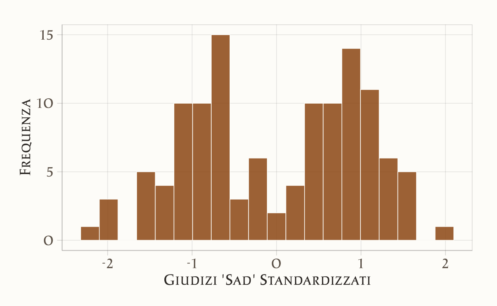
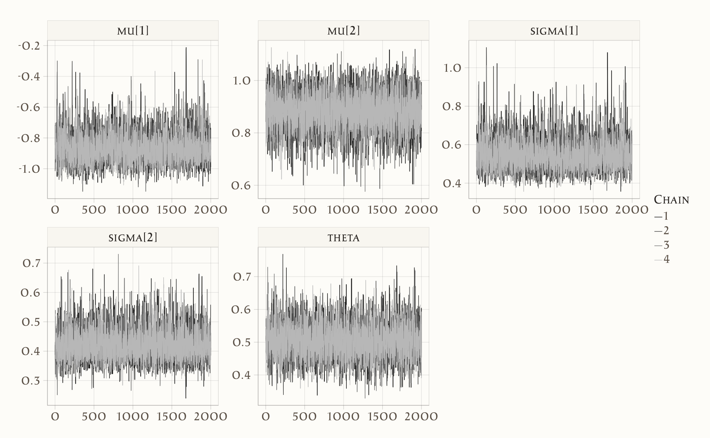
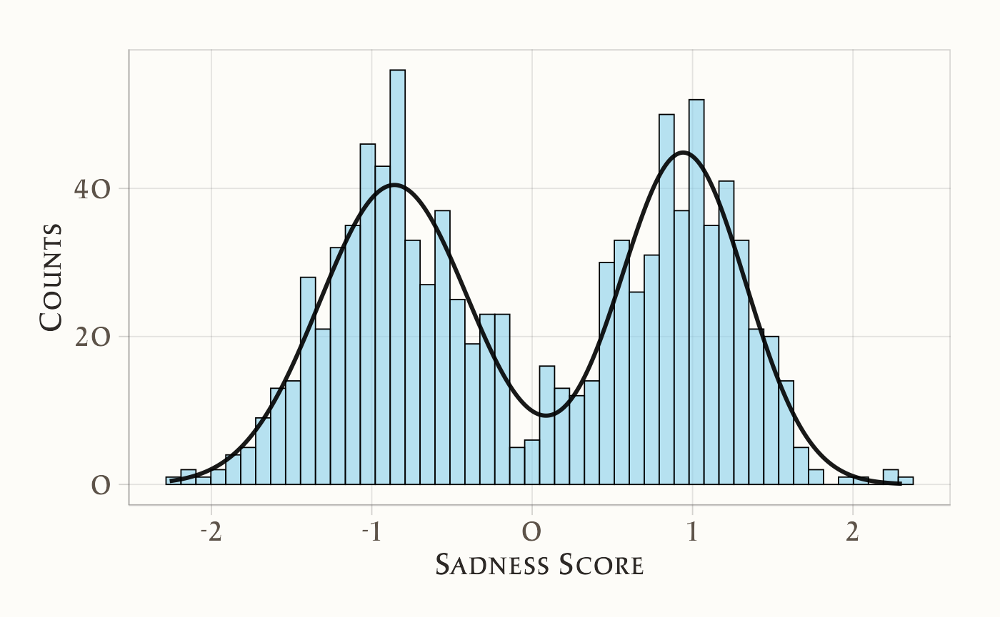

here::here("code", "_common.R") |> source()
# Carichiamo i pacchetti necessari
if (!requireNamespace("pacman")) install.packages("pacman")
pacman::p_load(cmdstanr, posterior, insight, bayesplot, ggplot2)20 Modelli Mistura Gaussiani
Introduzione
La distribuzione gaussiana costituisce uno degli strumenti fondamentali della statistica, non solo perché molti fenomeni psicologici ed empirici possono approssimativamente seguirne l’andamento, ma anche perché essa funge da elemento costitutivo di modelli più complessi. Un esempio particolarmente rilevante è rappresentato dalle cosiddette misture di distribuzioni. Una mistura descrive una variabile casuale la cui distribuzione complessiva deriva dalla combinazione ponderata di più distribuzioni elementari, ciascuna delle quali rappresenta una possibile sottopopolazione dei dati osservati.
Nel caso delle variabili continue, una mistura di gaussiane è definita come la somma pesata di più densità normali. Ad esempio, una mistura di due distribuzioni normali può essere espressa come
\[ f(x; \pi_1, \mu_1, \sigma_1, \mu_2, \sigma_2) = \pi_1 \, \phi(x; \mu_1, \sigma_1) + \pi_2 \, \phi(x; \mu_2, \sigma_2), \] dove \(\pi_1\) e \(\pi_2 = 1 - \pi_1\) rappresentano i pesi delle due componenti e \(\phi(x; \mu, \sigma)\) è la densità di una distribuzione normale con media \(\mu\) e deviazione standard \(\sigma\). In questo modo, la distribuzione osservata non coincide con una singola gaussiana, ma risulta dalla sovrapposizione di più curve normali che descrivono sottogruppi distinti della popolazione.
Un’applicazione classica di questo approccio riguarda lo studio di popolazioni eterogenee. Se consideriamo, ad esempio, l’altezza di uomini e donne, possiamo assumere che ciascun gruppo segua una distribuzione normale con media e varianza proprie. La distribuzione complessiva dell’altezza nella popolazione generale sarà quindi una mistura di due gaussiane, che riflette la coesistenza di sottopopolazioni con caratteristiche differenti.
L’idea alla base delle misture di gaussiane è dunque quella di fornire un modello flessibile capace di rappresentare situazioni in cui i dati provengono da più processi generativi sottostanti. Questo aspetto è particolarmente rilevante in psicologia, dove spesso i campioni includono soggetti appartenenti a sottogruppi differenti, non sempre immediatamente osservabili. L’utilizzo di modelli di mistura permette di identificare tali sottopopolazioni e di descriverne le proprietà con maggiore precisione, aprendo così la strada a interpretazioni più ricche e articolate dei fenomeni psicologici.
Panoramica del capitolo
- Comprendere il ruolo dei modelli di mistura gaussiana nello studio di popolazioni eterogenee.
- Simulare dati che rappresentano due sottogruppi distinti (mindfulness e controllo).
- Stimare i parametri del modello tramite inferenza bayesiana in Stan.
- Valutare l’incertezza delle stime e interpretarne i risultati.
- Visualizzare la struttura latente dei dati per trarne implicazioni psicologiche.
20.1 Simulazione dei Dati
Per illustrare l’uso dei modelli di mistura, ci basiamo su uno studio condotto da Rowland & Wenzel (2020), che ha indagato gli effetti di un training di mindfulness molto breve sulla consapevolezza e sull’autocontrollo percepito nella vita quotidiana. In quell’indagine i partecipanti erano suddivisi in due gruppi: il primo riceveva un addestramento alla mindfulness, mentre il secondo fungeva da gruppo di controllo. Le valutazioni erano raccolte tramite un protocollo di monitoraggio giornaliero, avviato subito dopo la prima sessione di laboratorio e protratto per quaranta giorni consecutivi.
Per ragioni didattiche, qui non utilizziamo i dati originali, ma costruiamo una simulazione ispirata allo studio. Ci concentriamo in particolare su una delle dimensioni prese in esame, quella relativa al vissuto di tristezza (“sad”). Immaginiamo che i due gruppi mostrino distribuzioni differenti: il gruppo sottoposto a training mindfulness con una media più bassa nei giudizi di tristezza, e il gruppo di controllo con una media più elevata. Generiamo quindi due sottopopolazioni gaussiane, con la stessa deviazione standard ma con valori medi distinti, e un numero uguale di osservazioni.
Il codice seguente crea i dati simulati, li organizza in un data frame e ne fornisce una prima esplorazione grafica tramite un istogramma dei valori standardizzati:
# Parametri per le distribuzioni normali
# Sad mindfulness
mu_mindfulness <- 20 # giudizi sad
sigma_mindfulness <- 10 # deviazione standard
# Sad control
mu_control <- 60 # giudizi sad
sigma_control <- 10 # deviazione standard
# Simulazione di 60 casi per ciascuna sottopopolazione
set.seed(42) # per la riproducibilità
sad_mindfulness <- rnorm(60, mean = mu_mindfulness, sd = sigma_mindfulness)
sad_control <- rnorm(60, mean = mu_control, sd = sigma_control)
# Creazione del DataFrame per visualizzare i dati
dati_sad <- data.frame(
Sad = c(sad_mindfulness, sad_control),
Group = c(rep("Mindfulness", 60), rep("Control", 60))
)
# Mostra i primi e gli ultimi dati simulati
head(dati_sad)
#> Sad Group
#> 1 33.7 Mindfulness
#> 2 14.4 Mindfulness
#> 3 23.6 Mindfulness
#> 4 26.3 Mindfulness
#> 5 24.0 Mindfulness
#> 6 18.9 Mindfulness
tail(dati_sad)
#> Sad Group
#> 115 43.4 Control
#> 116 56.2 Control
#> 117 54.9 Control
#> 118 87.0 Control
#> 119 46.4 Control
#> 120 61.4 Control# Parametri delle distribuzioni
parametri_distribuzioni <- data.frame(
Sottopopolazione = c("Mindfulness", "Control"),
Media_mu = c(mu_mindfulness, mu_control),
Deviazione_Standard_sigma = c(sigma_mindfulness, sigma_control)
)
print(parametri_distribuzioni)
#> Sottopopolazione Media_mu Deviazione_Standard_sigma
#> 1 Mindfulness 20 10
#> 2 Control 60 10# Standardizzazione dei dati
dati_sad$Sad_z <- scale(dati_sad$Sad)
# Creazione dell'istogramma per i dati standardizzati
ggplot(dati_sad, aes(x = Sad_z)) +
geom_histogram(
bins = 20
) +
labs(
x = "Giudizi 'Sad' Standardizzati",
y = "Frequenza"
)
L’istogramma mostra come i dati simulati non seguano una singola distribuzione normale, ma rivelino piuttosto la presenza di due sottopopolazioni sovrapposte, coerenti con la distinzione tra gruppo mindfulness e gruppo di controllo.
20.1.1 Codice Stan
Il seguente codice Stan è stato ripreso dallo studio di Michael Betancourt Identifying Bayesian Mixture Models e fornisce un’implementazione essenziale di un modello di mistura di due distribuzioni gaussiane:
# Imposta il percorso al file Stan
stan_file <- file.path(here("stan", "bimodal_model.stan"))
# Compila il modello
model <- cmdstan_model(stan_file)La struttura del modello segue la logica tipica di Stan, articolandosi nei blocchi di definizione dei dati, dei parametri e del modello vero e proprio. Nel blocco data vengono introdotte le osservazioni: il numero totale dei dati, indicato con \(N\), e il vettore \(y\), che raccoglie i valori osservati. Si tratta quindi dell’informazione empirica che vogliamo interpretare attraverso la mistura.
model$print()
#> data {
#> int<lower=0> N;
#> vector[N] y;
#> }
#> parameters {
#> ordered[2] mu;
#> array[2] real<lower=0> sigma;
#> real<lower=0, upper=1> theta;
#> }
#> model {
#> sigma ~ normal(0, 2);
#> mu ~ normal(0, 2);
#> theta ~ beta(5, 5);
#> for (n in 1 : N)
#> target += log_mix(theta, normal_lpdf(y[n] | mu[1], sigma[1]),
#> normal_lpdf(y[n] | mu[2], sigma[2]));
#> }Il blocco parameters specifica le quantità ignote da stimare. In primo luogo compaiono le due medie \(\mu\), dichiarate come vettore ordinato: questa scelta tecnica, che impone la condizione \(\mu_1 \leq \mu_2\), evita problemi di identificabilità che potrebbero emergere se i due componenti della mistura fossero liberi di scambiarsi di posizione. Seguono le deviazioni standard \(\sigma\), che devono assumere valori positivi, e infine il parametro \(\theta\), vincolato all’intervallo compreso tra 0 e 1, che rappresenta la proporzione di osservazioni attribuibili al primo componente della mistura.
Il cuore del modello si trova nel blocco model, dove vengono specificate le distribuzioni a priori e la funzione di verosimiglianza. Alle medie e alle deviazioni standard si assegna una distribuzione normale con media zero e deviazione standard pari a 2, che esprime aspettative flessibili ma non eccessivamente diffuse sui valori plausibili di questi parametri. Al parametro di mescolamento \(\theta\) si assegna invece una distribuzione Beta(5,5), centrata su 0.5, che riflette un’aspettativa iniziale di equilibrio tra le due componenti senza però escludere altre configurazioni.
Per ciascuna osservazione \(y[n]\), il modello calcola la log-verosimiglianza utilizzando la funzione log_mix. Questa funzione combina la probabilità che il dato provenga dalla prima distribuzione normale, pesata con \(\theta\), e quella che provenga dalla seconda distribuzione, pesata con \(1 - \theta\). In questo modo il modello traduce formalmente l’idea di mistura: ogni osservazione è considerata come proveniente da due sorgenti potenziali, con probabilità rispettivamente \(\theta\) e \(1 - \theta\).
In sintesi, il modello Stan implementa un meccanismo generativo in cui i dati osservati sono trattati come campioni provenienti da una distribuzione bimodale. L’obiettivo dell’inferenza bayesiana è stimare, a partire dai dati, le medie e le deviazioni standard delle due gaussiane che compongono la mistura, insieme alla proporzione \(\theta\) che determina il peso relativo dei due componenti. Questo approccio, pur nella sua semplicità, consente di catturare in modo rigoroso la presenza di sottopopolazioni latenti nei dati psicologici.
Creiamo il dizionario con i dati nel formato richiesto da Stan.
# Creazione della lista di dati per Stan
stan_data <- list(
N = length(dati_sad$Sad_z),
y = as.numeric(dati_sad$Sad_z) # vettore numerico
)
stan_data
#> $N
#> [1] 120
#>
#> $y
#> [1] -0.28517 -1.12319 -0.72150 -0.60472 -0.70369 -0.92466 -0.22432 -0.91969
#> [9] -0.00486 -0.90586 -0.31379 0.11126 -1.48000 -0.99941 -0.93643 -0.60338
#> [17] -1.00177 -2.02879 -1.93528 -0.30719 -1.01147 -1.64991 -0.95314 -0.35283
#> [25] -0.05821 -1.06508 -0.99009 -1.64205 -0.67952 -1.15579 -0.68153 -0.57356
#> [33] -0.43058 -1.14234 -0.66010 -1.62207 -1.21833 -1.24710 -1.92391 -0.86307
#> [41] -0.78953 -1.03503 -0.55047 -1.19333 -1.47109 -0.69133 -1.22999 -0.25351
#> [49] -1.06550 -0.59486 -0.73934 -1.21806 -0.19652 -0.60038 -0.83985 -0.75898
#> [57] -0.58462 -0.83982 -2.17453 -0.75537 0.69405 0.93323 1.10493 1.45903
#> [65] 0.53816 1.41696 0.99844 1.30264 1.25165 1.16513 0.40143 0.81399
#> [73] 1.12298 0.44022 0.61803 1.10457 1.18561 1.05382 0.46955 0.37690
#> [81] 1.50794 0.96470 0.89133 0.80070 0.33597 1.11799 0.75903 0.77391
#> [89] 1.25712 1.20881 1.45573 0.64688 1.13460 1.45530 0.37213 0.48037
#> [97] 0.36306 0.22129 0.88766 1.13583 1.37298 1.30535 0.41871 1.65331
#> [105] 0.56437 0.89872 0.67023 0.80007 0.93451 0.90463 0.84217 0.89983
#> [113] 0.64287 0.63474 0.13389 0.68751 0.63109 2.02278 0.26333 0.9124620.1.2 Campionamento
Una volta definito il modello, possiamo procedere all’inferenza bayesiana eseguendo il campionamento MCMC.
fit <- model$sample(
data = stan_data,
iter_warmup = 2000,
iter_sampling = 2000,
seed = 123,
refresh = 0
)Il campionamento produce migliaia di estrazioni dalla distribuzione a posteriori dei parametri. Un primo passo per la valutazione della bontà del modello consiste nell’ispezione delle catene MCMC, che consente di verificare la loro convergenza e la stabilità delle stime.
# Traceplot per i parametri di interesse
mcmc_trace(as_draws_array(fit$draws(c("mu", "sigma", "theta"))))
20.1.3 Risultati
Possiamo poi riassumere le distribuzioni a posteriori dei parametri principali del modello, ovvero le medie, le deviazioni standard e la proporzione di mescolamento.
fit$summary(variables = c("mu", "sigma", "theta"))
#> # A tibble: 5 × 10
#> variable mean median sd mad q5 q95 rhat ess_bulk ess_tail
#> <chr> <dbl> <dbl> <dbl> <dbl> <dbl> <dbl> <dbl> <dbl> <dbl>
#> 1 mu[1] -0.858 -0.868 0.101 0.091 -1.001 -0.679 1.002 3141.500 2608.342
#> 2 mu[2] 0.883 0.886 0.070 0.066 0.766 0.996 1.000 6778.401 5781.664
#> 3 sigma[1] 0.550 0.539 0.082 0.074 0.439 0.699 1.001 3935.774 3249.503
#> 4 sigma[2] 0.425 0.420 0.054 0.052 0.346 0.521 1.000 4739.147 4983.220
#> 5 theta 0.507 0.505 0.054 0.052 0.422 0.599 1.000 4136.772 3356.066Per visualizzare meglio i risultati, possiamo rappresentare la distribuzione bimodale ricostruita a partire dai valori medi posteriori.
# Posterior estimates (da output Stan, qui inseriti manualmente come nell’esempio Python)
mu_0 <- -0.859
mu_1 <- 0.942
sigma_0 <- 0.468
sigma_1 <- 0.390
theta <- 0.520 # Probabilità del primo componente
# Simulazione dati dalla distribuzione mista (per esempio 1000 campioni)
set.seed(42)
data <- c(
rnorm(1000 * theta, mean = mu_0, sd = sigma_0),
rnorm(1000 * (1 - theta), mean = mu_1, sd = sigma_1)
)
# Densità teorica della mixture
x <- seq(min(data), max(data), length.out = 1000)
kde <- theta * dnorm(x, mean = mu_0, sd = sigma_0) +
(1 - theta) * dnorm(x, mean = mu_1, sd = sigma_1)
# Scala la densità per l’istogramma (conteggi, non densità)
binwidth <- (max(data) - min(data)) / 50
hist_area <- length(data) * binwidth
kde_scaled <- kde * hist_area
# Plot
ggplot(data.frame(x = data), aes(x)) +
geom_histogram(bins = 50, fill = "skyblue", alpha = 0.6, color = "black") +
geom_line(data = data.frame(x, y = kde_scaled), aes(x, y),
color = "black", size = 1) +
labs(
x = "Sadness Score", y = "Counts"
)
Il confronto tra l’istogramma dei dati simulati e la curva della distribuzione stimata mostra una sovrapposizione molto convincente, segno che il modello è riuscito a cogliere correttamente la struttura bimodale dei dati.
Poiché i dati erano stati standardizzati prima dell’analisi, possiamo ricondurre i parametri stimati alla scala originale dei punteggi per ottenere una lettura più intuitiva.
# Media e deviazione standard della distribuzione originale
mean_original <- mean(dati_sad$Sad)
std_original <- sd(dati_sad$Sad)
# Parametri posteriori delle distribuzioni standardizzate
mu_0_standardized <- -0.859
mu_1_standardized <- 0.942
sigma_0_standardized <- 0.468
sigma_1_standardized <- 0.390
# Conversione dei parametri alla scala originale
mu_0_original <- mu_0_standardized * std_original + mean_original
mu_1_original <- mu_1_standardized * std_original + mean_original
sigma_0_original <- sigma_0_standardized * std_original
sigma_1_original <- sigma_1_standardized * std_original
# Stampa dei risultati
cat(
sprintf("Media a posteriori della prima sottopopolazione: %.2f\n", mu_0_original),
sprintf("Media a posteriori della seconda sottopopolazione: %.2f\n", mu_1_original),
sprintf("Deviazione standard a posteriori della prima sottopopolazione: %.2f\n", sigma_0_original),
sprintf("Deviazione standard a posteriori della seconda sottopopolazione: %.2f\n", sigma_1_original)
)
#> Media a posteriori della prima sottopopolazione: 20.46
#> Media a posteriori della seconda sottopopolazione: 62.05
#> Deviazione standard a posteriori della prima sottopopolazione: 10.81
#> Deviazione standard a posteriori della seconda sottopopolazione: 9.01Il confronto con i valori utilizzati per simulare i dati (\(\mu = 20\) e \(\mu = 60\), con \(\sigma = 10\) in entrambi i gruppi) evidenzia una corrispondenza molto buona. Questo risultato è particolarmente significativo se si considera che il modello non riceveva alcuna informazione esplicita sull’appartenenza di ciascun individuo a un gruppo. In altre parole, è stato in grado di individuare autonomamente le due sottopopolazioni e di stimarne i parametri con precisione.
Dal punto di vista sostantivo, questo esempio didattico ci permette di riflettere sulla questione posta nello studio di Rowland & Wenzel (2020). Se in una popolazione eterogenea esistono gruppi che reagiscono in modo diverso a un intervento psicologico, come nel caso del training di mindfulness, i modelli di mistura offrono uno strumento potente per identificare tali differenze senza dover disporre a priori di una classificazione. Nel nostro caso, il modello ha permesso di distinguere chiaramente il gruppo sottoposto a mindfulness da quello di controllo sulla base dei punteggi di tristezza. Ciò illustra in termini concreti come le tecniche bayesiane di mistura possano contribuire a svelare strutture latenti nei dati psicologici, rendendo visibili effetti che altrimenti rischierebbero di rimanere nascosti.
20.2 Riflessioni conlusive
In questo capitolo abbiamo visto come i modelli di mistura gaussiana possano essere applicati con successo a dati psicologici che nascondono una struttura eterogenea. Partendo da una simulazione ispirata allo studio di Rowland & Wenzel (2020), abbiamo mostrato come l’approccio bayesiano consenta di stimare in modo accurato i parametri di due sottopopolazioni distinte sulla base dei giudizi di tristezza.
Il risultato più rilevante è che il modello è stato in grado di distinguere i due gruppi senza alcuna informazione preventiva sulla loro appartenenza. Questo aspetto è cruciale in psicologia, dove spesso non si dispone di criteri netti per separare sottogruppi di individui, ma dove le differenze emergono come pattern latenti nei dati. L’inferenza bayesiana applicata ai modelli di mistura permette non solo di stimare questi pattern, ma anche di quantificare l’incertezza che li accompagna, fornendo quindi una base solida per le interpretazioni teoriche.
Dal punto di vista sostantivo, la lezione che possiamo trarre è che la variabilità osservata nei dati psicologici non deve essere considerata un semplice “rumore”, ma può riflettere la presenza di processi distinti che operano all’interno della popolazione. Proprio come nel nostro esempio, in cui il gruppo mindfulness mostrava livelli inferiori di tristezza rispetto al gruppo di controllo, i modelli di mistura offrono un mezzo per far emergere tali differenze anche in assenza di etichette esplicite.
In conclusione, i modelli di mistura gaussiana rappresentano uno strumento prezioso per lo psicologo che desidera andare oltre le analisi aggregate e indagare la complessità intrinseca dei fenomeni psicologici. Essi consentono di riconoscere la presenza di sottogruppi latenti, di stimarne le caratteristiche e di aprire così nuove prospettive interpretative sui dati, in linea con la crescente attenzione della ricerca contemporanea alla diversità interindividuale e alle dinamiche contestuali che influenzano l’esperienza umana.
Bibliografia
Rowland, Z., & Wenzel, M. (2020). Mindfulness and affect-network density: Does mindfulness facilitate disengagement from affective experiences in daily life? Mindfulness, 11, 1253–1266.